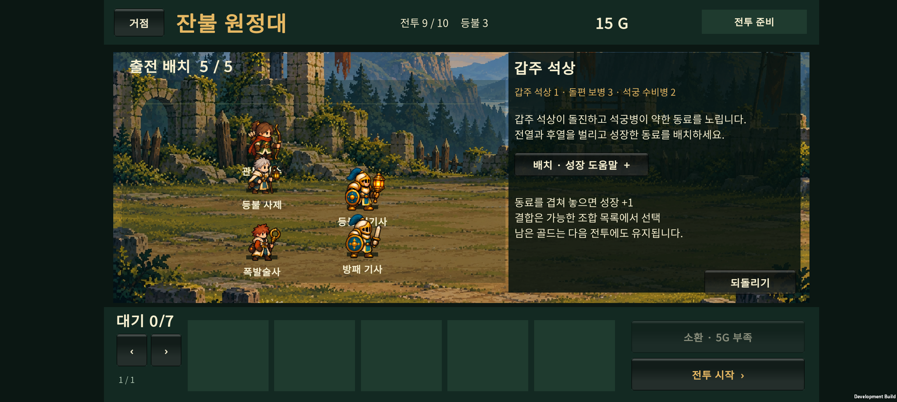
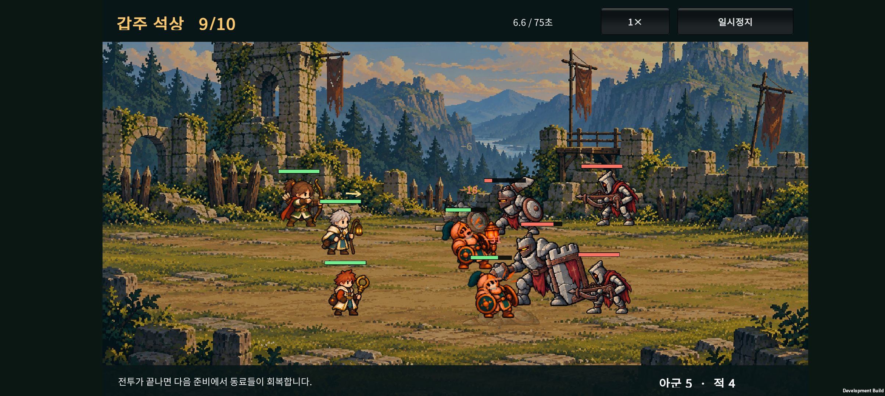
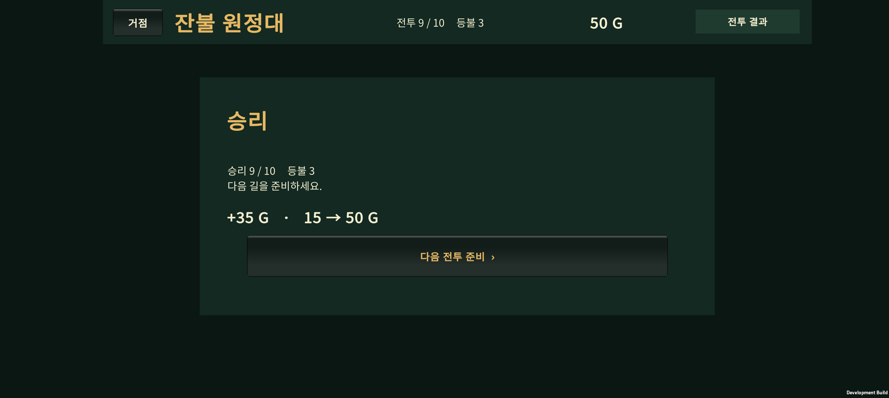
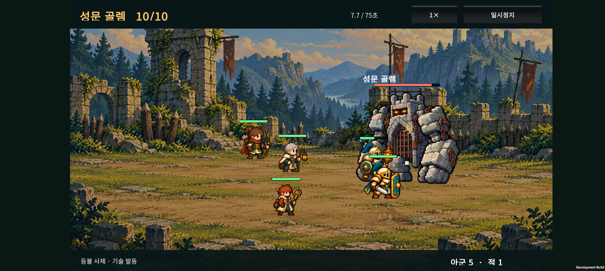
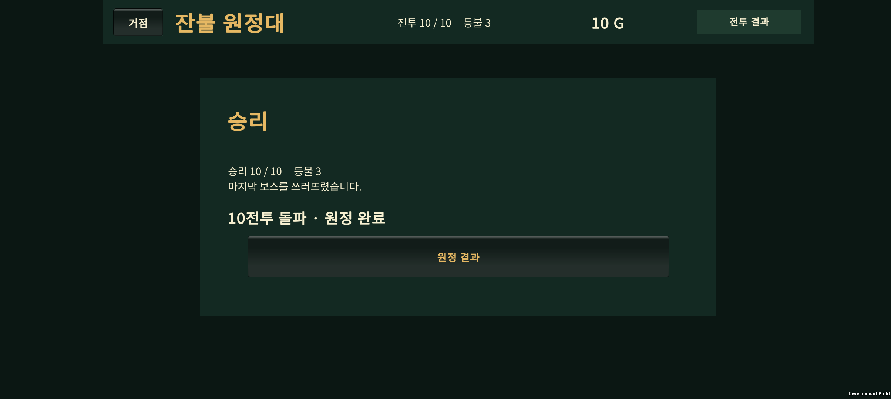

2026-10-24 · 아군 몸 크기 보정(v0.22) 다음 작업
6전투는 첫 보스 후 쉬어가는 구간으로 유지하고, 7~9전투의 공격 압박을 높였다. 10전투 골렘은 체력을 줄여 분기 진화·결합 편성의 공략 여지를 넓혔다. 출시 난도 확정판은 아니다.
1. 이번 조정
| 구간 | 적 공격력 변경 | 의도 |
|---|---|---|
| 6전투 | 변경 없음 | 첫 보스 뒤 새 지역과 편성을 확인하는 구간 |
| 7전투 | 보병 21→25, 석궁 17→24 | 성장하지 않은 팀에 더 많은 피해 |
| 8전투 | 보병 22→28, 석궁 18→25 | 늘어난 적 수와 함께 전열·회복 압박 |
| 9전투 | 보병 23→29, 석궁 20→28, 석상 35→42 | 마지막 보스 전에 성장한 편성의 필요성 확인 |
| 10전투 | 공격력 80 유지, 골렘 HP 5000→4200 | 보스 패턴을 버티는 시간을 줄여 성장 방향별 격차 완화 |
6~9전투 준비 화면에도 석궁의 약한 동료 우선 공격, 진화·전승 점검, 석상의 돌진 안내를 추가했다. 석궁의 실제 우선 대상은 사거리 안에서 남은 체력 비율이 낮은 동료다.
1~5전투, 적 수·배치·패턴, 시작 인원, 소환 비용, 승리 골드, 성장 규칙, 아군 능력치, 그림과 저장 형식은 동일하다. 이전 저장의 준비 화면 또는 중단된 전투를 이어갈 때 새 적 수치가 적용된다.
2. 변경 전후 자동 비교
SOL이 시드 140으로 조정하고, 상위 작업에서 별도 시드 **10011100**을 비교했다. 별도 시드 결과를 보고 다시 수치를 맞추지 않았다.
| 고정 성장 정책 | 9전투 승리 전→후 | 10전투 승리 전→후 | 10전투 평균 시간 전→후 |
|---|---|---|---|
| 기본형 5명, 성장 없음 | 32→0 / 100 | 0→0 / 100 | 27.46→27.46초 |
| 분기 진화 분산 | 100→100 / 100 | 58→94 / 100 | 55.14→45.59초 |
| 기사 최종 진화 우선 | 100→100 / 100 | 100→100 / 100 | 46.50→39.72초 |
| 기사·사제 H-02 결합 우선 | 100→100 / 100 | 23→44 / 100 | 47.12→43.23초 |
평균 시간에는 패배도 포함한다. 기본형의 짧은 시간은 빠른 승리를 뜻하지 않는다. 이번 표의 세 성장 정책은 실제 무패 10전투 완료 수도 각각 94·100·44였다. 기본형 정책은 5전투부터 대부분 탈락한다.
일반전에서 드러나는 차이
- 8전투 기본형 5명의 평균 남은 체력은 60%→48%. 분기 편성은 99%→95%, H-02 편성은 91%→85%였다.
- 9전투 분기 편성은 95%→87%, 최종 우선 편성은 98%→92%, H-02 편성은 81%→70%였다.
- 성장한 팀의 7
9전투 평균 시간은 대체로 약 817초로 유지했다. 적 체력을 일괄 늘려 일반전을 길게 만들지는 않았다. - 마지막 보스에서는 모든 성장 방향이 동일해지지는 않았다. H-02 정책의 승리는 늘었지만 여전히 다른 두 정책보다 낮다.
해석의 한계
고정 자동 정책은 실제 소환·흡수·진화·결합 API와 합법 예산을 사용한다. 다만 개별 전투 비교는 앞에서 패배했어도 이전 승리 보상을 받았다고 가정하며, 무패 진행 수는 reachWins로 따로 센다. 시작 3명 정책은 소환하지 않아 같은 팀을 반복한다.
이는 사람의 승률이나 모든 결합의 균형을 검증한 결과가 아니다. H-02 정책은 기사와 사제를 결합해 다른 역할 구성이 되며, 한 종류의 결합·분기·고정 배치만 사용한다. 강한 최종 진화 팀이 쉽게 이기는 보상도 남겼다.
v0.17의 옛 난도 표와 현재 결과는 같지 않다. 이후 전투 간격·이동 보정이 들어갔으므로 이번 기록은 v0.22의 현재 코드에서 변경 전후를 다시 측정한 값이다.
조정 전 40개 시드 · 조정 후 40개 시드 · 별도 100개 시드 변경 전 · 별도 100개 시드 변경 후
3. 검증과 휴대폰
- 기존 원정 검사 1,675개, 카탈로그 전투 검사 3,011개 통과.
- 아군 크기 검사 460개, 성채 적 264개, 숲 적 258개, 표시 순서 12개, 드래그·JSON 17개와 전투 종료·보스 피격 회귀 검사 통과.
- Android 빌드 성공, Galaxy Buddy2에 업데이트 설치.
- 최종 APK SHA-256:
2B8BF21C88132C2F00DDCCD772054AA234ED41930968E45B226C9491978AC353. - 빌드 로그:
unity/Logs/v023-castle-progression-build.log(로컬 산출물). - 기존 정책 비교에서 1~6전투의 변경 전후 결과 30행이 동일함을 확인.
Buddy2 확인
시드 1의 H-02 정책을 실제 코어 API로 처음부터 진행해, 이전 전투를 모두 승리한 9·10전투 준비 저장을 만들었다. 그 체크포인트를 휴대폰에 넣어 확인했다. 휴대폰에서 1~10전투를 처음부터 수동 완주한 검사는 아니다.
- 9전투 준비 안내 두 줄이 잘리지 않고 표시됨을 확인.
- 9전투 승리, 35G 보상 / 15→50G, 다음 10전투 준비 전환 확인.
- 합법적인 10전투 준비 체크포인트로 H-02·수호 기사 편성의 골렘 승리와 원정 완료 전환 확인.
- 해당 실행 중
Unity·AndroidRuntime오류 로그 없음. - 테스트 직전 원정 저장을 복원하고 원본과 바이트 단위 일치 확인.
화면·영상은 이 테스트 편성의 표시와 진행 확인이다. 장시간 발열·배터리·최저 프레임 측정은 포함하지 않는다.





4. 주요 파일과 다음 순서
unity/Assets/Scripts/Core/ExpeditionRun.cs: 7~10전투 적 수치.unity/Assets/Scripts/Presentation/ExpeditionScreen.cs: 성채 준비 안내.tests/ExpeditionRun/BalanceProbe.cs: 기존 5가지 정책으로 전후 비교. 정책 코드는 변경하지 않았다.docs/design-v0.23/: 조정·검증 데이터와 기기 기록.
실제 플레이 체감과 H-02의 편성 선택은 후속 확인 대상이다. 출시 목표인 30전투는 기존 계획대로 10→20→30 순서로 확장한다. 출시 범위.
이전 아군 몸 크기 보정은 05babdb로 커밋했다. 이번 성채 난도 조정은 다음 개발분이다. v0.22 기록.